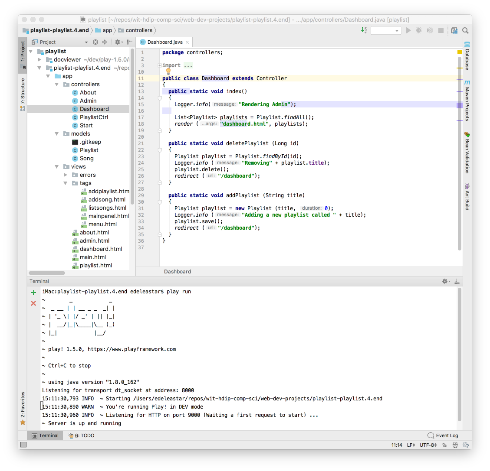
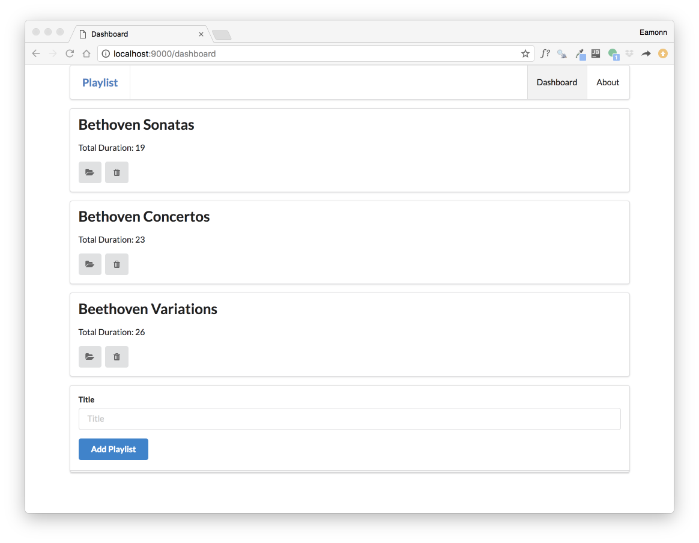
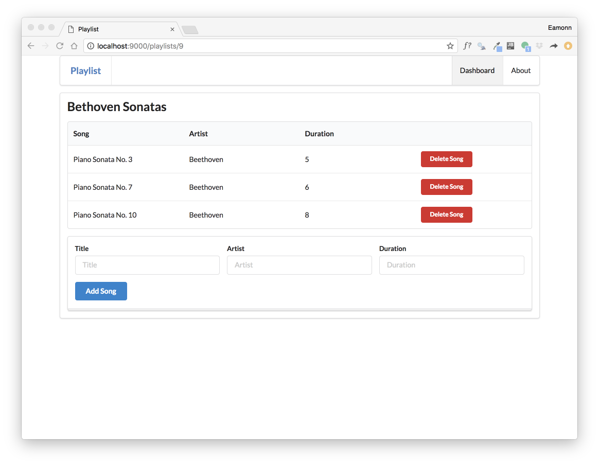
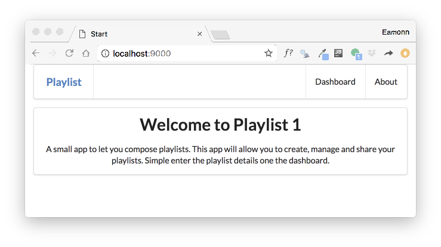
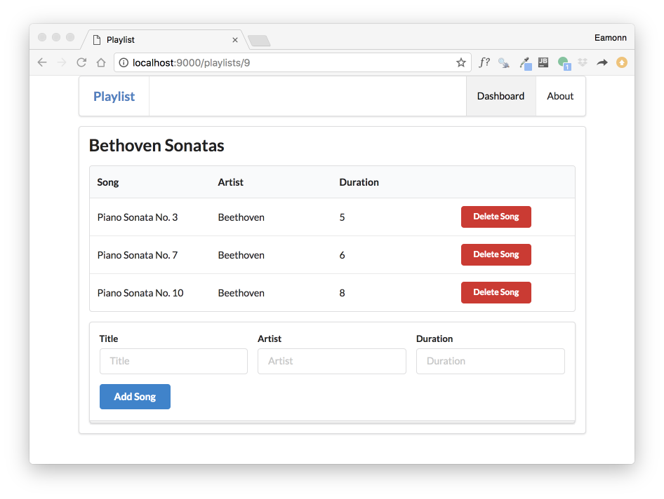

Review the Playlist Application
In Lab 09b, we extended the original playlist application to support the creation and deletion of playlists + songs.
This is the version as we left it:
Download this archive - unzip it, and make it available for Idea by entering:
play idealizeInside the download folder. Open the project in Idea:

You can run the application from inside IDE via the terminal (as shown above).
Verify the basic operation of the app:

All the buttons should work

In order to refresh our understanding of how the application works, start by looking at the routes file:
GET / Start.index
GET /dashboard Dashboard.index
GET /dashboard/deleteplaylist/{id} Dashboard.deletePlaylist
POST /dasghboard/addplaylist Dashboard.addPlaylist
GET /playlists/{id} PlaylistCtrl.index
GET /playlists/{id}/deletesong/{songid} PlaylistCtrl.deleteSong
POST /playlists/{id}/addsong PlaylistCtrl.addSong
GET /about About.index
GET /admin Admin.indexEach of these represents a link that the application can serve. These links are in the various views our application presents.
This is the route for the entire application
GET / Start.indexit will render the start page:

This is the controller method:
public static void index() {
Logger.info("Rendering Start");
render ("start.html");
}... and this is the start view:
#{extends 'main.html' /}
#{set title:'Start' /}
#{menu id:"start"/}
<section class="ui center aligned middle aligned segment">
<h1 class="ui header">
Welcome to Playlist 1
</h1>
<p>
A small app to let you compose playlists. This app will allow you to create, manage and share your playlists. Simple enter the playlist details one the dashboard.
</p>
</section>Rendering as :
Carry our the above inspection for the following routes:
GET /dashboard Dashboard.index
GET /about About.index
GET /admin Admin.indexI.e. Examine the controller + the associated view. Perhaps put them into a single text file using sublime so you can look at each controller method + view to get familiar with the life cycle, response composition and rendered page.
These routes here are a little different, in that they each contain at least one item in braces:
GET /playlists/{id} PlaylistCtrl.index
GET /dashboard/deleteplaylist/{id} Dashboard.deletePlaylist
GET /playlists/{id}/deletesong/{songid} PlaylistCtrl.deleteSongTake this one for instance:
GET /playlists/{id} PlaylistCtrl.indexThis is the matching controller method:
public static void index(Long id)
{
Playlist playlist = Playlist.findById(id);
Logger.info ("Playlist id = " + id);
render("playlist.html", playlist);
}and this is the view:
#{extends 'main.html' /}
#{set title:'Playlist' /}
#{menu id:"dashboard"/}
<section class="ui segment">
<h2 class="ui header">
${playlist.title}
</h2>
#{listsongs playlist:playlist /}
#{addsong playlist:playlist /}
</section>This renders as:

The key aspect to note here is the {id} is replaced by an actual number (9 in the example). And this number is passed to index as id:
public static void index(Long id).. and then used to locate the specific playlist in the model:
Playlist playlist = Playlist.findById(id);This fetched playlist is then passed to the view:
render("playlist.html", playlist);.. and is in turn passed by the view to the listsongs partial:
#{listsongs playlist:playlist /}Listsongs then iterates through the array, displaying each song in turn:
<table class="ui fixed table">
...
#{list items:_playlist.songs, as:'song'}
<tr>
<td>
${song.title}
</td>
<td>
${song.artist}
</td>
<td>
${song.duration}
</td>
<td>
<a href="/playlists/${_playlist.id}/deletesong/${song.id}" class="ui tiny red button">Delete Song</a>
</td>
</tr>
#{/list}
...
</table>Sounds complicated! - However this is typical of the life cycle of requests/response in web applications.
Try the above exercise - inspecting the life cycle of these routes:
GET /dashboard/deleteplaylist/{id} Dashboard.deletePlaylist
GET /playlists/{id}/deletesong/{songid} PlaylistCtrl.deleteSongThe last one is particularly interesting - notice there are 2 variables in braces: {id} and {songid}. Why are both needed?
The final routes of interest are the POST routes:
POST /dasghboard/addplaylist Dashboard.addPlaylist
POST /playlists/{id}/addsong PlaylistCtrl.addSongPOST is always used in the context of a from - and the above support forms for creating playlists or songs.
Looking at this one in more detail:
POST /dasghboard/addplaylist Dashboard.addPlaylistThis route is associated with this form:
<form class="ui stacked segment form" action="/dashboard/addplaylist" method="POST">
<div class="field">
<label>Title</label>
<input placeholder="Title" type="text" name="title">
</div>
<button class="ui blue submit button">Add Playlist</button>
</form>.. and this controller method:
public static void addPlaylist (String title)
{
Playlist playlist = new Playlist (title, 0);
Logger.info ("Adding a new playlist called " + title);
playlist.save();
redirect ("/dashboard");
}When the method completes, it just triggers the dashboard route again:
public static void index()
{
Logger.info("Rendering Admin");
List<Playlist> playlists = Playlist.findAll();
render ("dashboard.html", playlists);
}This will display the list of playlists - this time the database query will return one less.
Inspect this route in detail:
POST /playlists/{id}/addsong PlaylistCtrl.addSongLocating:
Consider carrying out the same exercise for the TodoList 1 application
Consider carrying out the same exercise for the TodoList 2 application - this is the same application but with the addition of Session support.